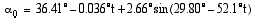
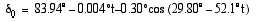
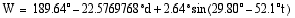
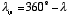
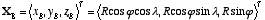
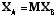
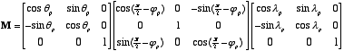
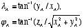
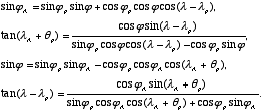

Cassini Radar Instrument Team

Document Log
Data Product Characteristics and Environment 2
Relationships with Other Interfaces 2
Instrument Description Summary 3
Introduction
Purpose and Scope
The purpose of this Data Product Software Interface Specification (SIS) is to provide users of the Cassini RADAR Basic Image Data Record (BIDR) data set with a detailed description of the products and a description of how they were generated. BIDR data files are single pass SAR image data which are calibrated and gridded. The BIDR data set id is CO-SSA-RADAR-5-BIDR-V1.0 and its CODMAC level is 5.
This SIS is intended to provide enough information to enable users to read and understand the BIDR products. The users for whom this SIS is intended are software developers, engineers, and scientists interested in accessing and using the BIDR products.
This document describes how Cassini RADAR Basic Image Data Records were processed, formatted, labeled, and uniquely identified. The document discusses standards used in generating the product and software that may be used to access the product. The data product structure and organization is described in sufficient detail to enable a user to read the product. Finally, examples of product labels are provided.
Each BIDR file contains one image which can be either radar imagery of the surface of Titan or co-registered backplanes. Due to space limitations only a few backplanes were produced for information deemed important to the users such as latitude, longitude, beam mask, incidence angle, and number of looks. Additional information is available in the SBDR data file documented by [2]. The SBDR files are time ordered with each record comprising a single radar measurement cycle. Although each pixel in the BIDR image corresponds to multiple radar measurements, the viewing geometry does not change significantly within a pixel. A typical radar measurement can be found by searching the SBDR for the radar measurement whose boresight is closest to the ground location of the desired pixel. In this manner one can co-locate polarization orientation, azimuth angle, measurement acquisition time, effective resolution, and numerous other quantities with the radar imagery.
Applicable Documents and Constraints
This Data Product SIS is responsive to the following Cassini documents:
Project Data Management Plan, JPL D-12560, PD 699-061, Rev. B, April 1999, and Science Management Plan, JPL D-9178, PD 699-006, July 1999.
Cassini RADAR Burst Ordered Data Products SIS, JPL D-27891, Sept 2005, Version 1.5.
Cassini/Huygens Program Archive Plan for Science Data, JPL D-15976, 699-068.
SIS for Cassini RADAR Digital Map Products, JPL D-30411, USGS IO-AR-015, Version 1.0
This SIS is also consistent with the following Planetary Data System documents:
Planetary Data System Data Preparation Workbook, Version 3.1, February 17, 1995, JPL D-7669, Part 1.
Planetary Data System Data Standards Reference, June 15, 2001, Version 3.4, JPL D-7669, Part 2.
Finally, this SIS is meant to be consistent with the contract negotiated between the Cassini Project and the Cassini RADAR Experiment Principal Investigator (PI) in which data products and documentation are explicitly defined as deliverable products.
Elachi, C., et al., 2002, RADAR: The Cassini Titan RADAR Mapper, Space Science Reviews, in press.
Eliason, E.M., 1997. Production of digital image models using the ISIS system. Lunar Planet. Sci., XXVIII pp. 331-332, Lunar and Planetary Institute, Houston.
Gaddis, L. et al., 1997. An overview of the Integrated Software for Imaging Spectrometers (ISIS). Lunar Planet. Sci., XXVIII pp. 387-388, Lunar and Planetary Institute, Houston.
Torson, J., and K. Becker, 1997. ISIS: A software architecture for processing planetary images. Lunar Planet. Sci., XXVIII, pp. 143-1444, Lunar and Planetary Institute, Houston.
Seidelmann P. K., Abalakin, V. K., Bursa, M., Davies, M. E., De Bergh, C., Lieske, J. H., Oberst, J., Simon, J. L., Standish, E. M., Stooke, P., and Thomas, P. C., 2002. Report of the IAU/IAG working group on cartographic coordinates and rotational elements of the planets and satellites: 2000. Celest. Mech. Dyn. Astron., 82, pp. 83-110.
Snyder, J. P., 1987, Map projections--A working manual, U. S. Geological Survey Prof. Paper 1395.
Bugayevskiy, L. M., and Snyder, J. P., 1995, Map projections: A reference manual, Taylor & Francis, London and Bristol, Pennsylvania, 328 pp.
Yang, Q. H., Snyder, J. P., and Tobler, W. R., 2000, Map projection transformations: Principles and applications, Taylor & Francis, London and Bristol, Pennsylvania, 367 pp.
Greeley, R., and Batson, R. M., 1990, Planetary Mapping, Cambridge Univ. Press, Cambridge, 296 pp.
Data Product Characteristics and Environment
Relationships with Other Interfaces
The BIDR image products described in this SIS are used in the production of other archived products of the Cassini mission, so that changes to their content and format may result in an interface impact. In particular, the MIDR, RIDR, and DTM products described in [4] take BIDR products as their input data sets. The lower level RADAR products Burst Ordered Data Products (BODP) [2] are used in the production of the BIDR image products described here, so changes to the BODP formats may impact the software used to generate BIDR products as well as the higher-level products described in [4].
Instrument Overview
The Cassini RADAR [7] is a facility instrument on the Cassini Orbiter. It is capable of passive (radiometer) and active (scatterometer, altimeter, SAR imaging) operation. During active mode operation interleaved passive measurements are also obtained.
The primary target for Cassini Radar observations is Titan, the largest Saturnian moon. Due to its thick hazy atmosphere, Titan's surface was not imaged successfully by the Pioneer or Voyager spacecraft, though atmospheric "windows" in the near infrared have been exploited by the Hubble Space Telescope and earth-based telescopes to produce low-resolution albedo maps of part of the surface. The Cassini radar instrument will obtain backscatter and altimeter sounding measurements of Titan's surface. High resolution synthetic aperture radar (SAR) backscatter images of 15% of Titan's surface will be obtained. The image data products described in this SIS contain SAR data only.
Instrument Description Summary
Imaging (13.78 GHz; 0.425 MHz & 0.85 MHz bandwidth)
Altimeter(13.78 GHz; 4.25 MHz bandwidth)
Scatterometer(13.78 GHz; 0.1 MHz bandwidth)
Radiometer(13.78 GHz; 135 MHz bandwidth)
Number of nominal Operational Periods:
One (1) per selected flyby of Titan (approximately 12 to 22 flybys, total)
Duration of nominal Operational Period:
From 300 minutes before to 300 minutes after closest approach to Titan for prime operation.
Data Products Overview
The BIDR Products described in this document are all gridded (raster) maps of Titan derived from SAR data and stored in the form of PDS image files. These products will be generated in more than one bit type and at more than one resolution, as described in section See Data Product Generation.
Each BIDR product contains the SAR image coverage corresponding to a single Titan Pass. The BIDR will be produced in an oblique cylindrical coordinate system in which the great circle corresponding to the ground track of the spacecraft is defined to be 0 degrees latitude. Its extent will be the minimum bounding rectangle of the area of coverage in this projection.
Data Processing
Data Processing Level
This document uses the "Committee of Data Management and Computation" (CODMAC) data level number system. The data products referred to in this document are considered "level 5". These data products have been radiometrically calibrated and resampled to a standard map projection.
Data Product Generation
Cassini RADAR Basic Image Data Record Products described in this SIS are generated by members of the Cassini RADAR Instrument team at JPL in the full resolution floating point format. (For beam mask back-plane images the full resolution format is 8-bit, but they are still produced at JPL. See below.) These files will be converted into 8-bit formats at various resolutions by members of the Astrogeology Team of the U. S. Geological Survey (USGS) in Flagstaff, Arizona. The processing used to produce the 8-bit formats is the same as that done for the DMP products as described in the DMP SIS [4]. The 8 bit images will be returned to JPL from USGS and archived together with the full resolution floating point images. See section See Multiple Resolutions for a detailed descriptions of which resolutions will be available for each image type. The formats of all of these file types are documented here. These products are created from low level Burst Ordered Data Products (BODP) as described in [2]. Geometric data used as input include a description of the shape and orientation of the RADAR beams derived from in-flight geometric calibration by the RADAR team at JPL; mission-provided spacecraft pointing histories; and Titan and spacecraft ephemerides. The encoded raw active mode data in the BODP files is decoded, and processed into SAR images by the Cassini RADAR Instrument Team. The pixel values in the primary BIDR images will be normalized backscatter cross-section values corrected for incidence angle effects (sigma0_corrected, see [2]) as described in the BODP SIS. Additional secondary (back-plane) BIDR images on the same grid will also be included for latitude, longitude, incidence angle, number of looks, and beam mask for each pixel, as well as normalized backscatter cross-sections without incidence angle correction (sigma0, see [2]). The incidence angle correction algorithm is TBD and will be determined jointly by the Cassini RADAR Instrument and Science Teams after enough data is acquired to estimate the variation of sigma0 due to incidence angle over the surface of Titan.
Only one BIDR of each type and resolution is generated per pass. Information from all five beams is recorded in the same file. Additionally, for the σ0 images, a single pixel may contain information averaged from multiple beams. The method for averaging among beams is TBD.
Pixel Value Definitions
Pixels in the primary images represent the normalized backscatter cross-section which is computed from calculated received power for each pixel using the RADAR equation:
Here, Pr is the received power for the pixel, L is the system loss, r is the range to the pixel, Pt is the transmit power, Gr is the receiver gain, Gar is the antenna gain of the pixel at receive time, Gat is the antenna gain of the pixel at transmit time, A is the area of a nominal pixel projected onto the surface of a sphere, and λ is the wavelength of the RADAR signal. The normalized backscatter cross-section, σ0 is a unitless quantity. As mentioned above an additional version of the σ0 image is available that has been scaled to eliminate variation due to incidence angle. The floating point primary images produced by JPL will be linear scale (not in dB) unitless backscatter values. The 8-bit (byte) images produced by USGS will contain backscatter values which have been converted to dB then scaled and offset so that the dynamic range of the data is 0 to 255. Scaling and offset coefficients are reported in the attached PDS label (header) of each BIDR file.
Each pixel in the incidence angle back-plane image is the angle between the local normal and the antenna look vector. There are a number of measurements (possibly from different beams) used to determine a pixel in the σ0 image. The incidence angle varies slightly among different looks. The pixel value of the incidence angle backplane was computed by performing the same weighted average over looks that was done for the primary image.
The latitude (longitude) back-planes specify the ordinary latitude (longitude) of each pixel in the International Astronomical Union (IAU) standard coordinate system for Titan. This coordinate system is a planetographic latitude west longitude system. See section See Cartographic Standards below.
The identification of the beam or beams which were used to produce a given σ0 pixel is stored in the beam mask back-plane image. The pixels in this image are 8 bit values. For each pixel, bits 0-4 (bit 0 = LSB) indicate the beam usage as illustrated by the following table.
The number of looks backplane contains 8 bit integer values corresponding to the number of independent measurements averaged together to populate each pixel value. Counts beyond the maximum 255 value are stored as 255.
Multiple Resolutions
As mentioned above, USGS will process full resolution BIDRs to 8-bit format BIDRs at various resolutions, which will then be returned to the Cassini Radar Instrument Team at JPL for archiving. USGS will perform this processing only for the primary (incidence angle corrected σ0) images. The full resolution is 256 pixels per degree. Floating point versions of all full resolution images except (beam-masks) will be produced by the Cassini Radar Instrument Team at JPL (CRIT). CRIT will also produce 8-bit full resolution 256 pixels/degree, 128 pixels/degree beam-mask BIDRs, and 256 pixel per degree 8-bit number of looks BIDRs. USGS will produce 8-bit versions of primary (incidence angle corrected sigma0) image BIDRs at 256, 128, 32, 8, and 2 pixel per degree resolutions. USGS will also produce 128-pixel/degree versions of all the floating point BIDR images (backplanes and primary image).
SAR Processing algorithm
The radar echo data is stored as a time series of floating point values in the Long Burst Data Record (LBDR) format BODP files[2]. The SAR processor converts this data to BIDR images in a series of steps:
1) The data is segmented by pulse number.
2) It is range compressed by correlation with a matched filter.
4) It is calibrated (converted from raw counts to σ0 values) using the radar equation, an antenna gain pattern for each beam estimated from radiometric sun scans, planetary and spacecraft ephemeris, and pre-launch and post-launch instrument calibration measurements.
5) Overlapping measurements are averaged together after interpolation to a co-registered geo-located grid.
Labeling and Identification
The Cassini RADAR BIDRs will be archived as binary files, the initial records of which will contain a PDS label describing the contents in terms of the keywords listed and defined in Appendix B. Each Cassini RADAR BIDR will be assigned a string that uniquely identifies the type of data product, bit type, resolution, and the location of the data on Titan. This string will be used both as the value of the PRODUCT_ID keyword in the PDS labels and, with extension ".IMG" as the filename for that product. The scheme adopted is specified in Appendix B.
Standards Used in Generating Data Products
Coordinate Systems
The coordinate systems and geodetic/cartographic parameters used in production of the Cassini RADAR Basic Image Data Records are chosen to be consistent with the recommendations of the International Astronomical Union/International Association of Geodesy (IAU/IAG) Working Group on Cartographic Coordinates and Rotational Elements of the Planets and Satellites. These standards are also endorsed by the PDS [5, p. 2-1].
The IAU/IAG regularly revises its recommended cartographic constants, based on the best available data. As of this writing, the most recent report of the group [11] gives the following values of cartographic constants for Titan, based on astronomical observations and Voyager spacecraft data. The right ascension α0 and declination δ0 of the axis of rotation at a time t are given by


where t is the interval in Julian centuries from the standard epoch (J2000.0) 2000 January 1.5 TDB. The rotation of Titan around this axis is given in terms of the angle W measured eastward from the intersection of the planetary equator with the standard Earth equator to the prime meridian

where d is the time in days from the standard epoch. Values of α0, δ0, and W for a reference time within each Titan pass are included for convenience in each record of the BODP files. (See BODP SIS.)
The IAU/IAG report [11] also gives a recommendation for the reference figure for Titan, namely a sphere of radius 2575 km. This reference sphere will be used in defining the map projections of the BIDR and the Cassini RADAR Digital Map Products [4].
It is highly likely that the RADAR (and possibly other) investigations will yield information leading to a refinement of the cartographic constants given above. In particular, the spin axis direction and spin rate will be included as adjustable parameters in the calculation of a Titan control network and ephemerides, and the refinement of these spin parameters is a stated goal of the RADAR team. RADAR altimetry or other observations may also lead to an improved radius value or even a triaxial ellipsoid model for the Titan reference surface. Should such improved cartographic constants become available as a result of the Cassini mission, they will be communicated to the IAU/IAG Working Group for approval and will be used to produce the final, archived versions of the Cassini RADAR Basic Image Data Records.
The IAU has approved two different types of coordinate systems for planetary mapping. The first, usually described as "planetocentric" incorporates planetocentric latitude (the angle between a point, the center of the body, and the equatorial plane) and longitude measured positive eastward. This system is identical to the standard, right-handed spherical polar coordinate system of mathematics and is universally used in cartographic calculations even when the result will be converted to the other approved system for output. The second system, usually called "planetographic" uses planetographic latitude (the angle between the perpendicular to the reference surface at a point and the equatorial plane) and a positive longitude direction chosen so that the longitude of the disk center increases with time as seen by an observer fixed in inertial space. The choice of a spherical reference surface for Titan makes the two kinds of latitude identical, but the positive longitude direction associated with planetographic latitude for this prograde rotator is westward.
The planetographic latitude/west longitude system will be used for the Cassini RADAR BIDR. The motivation for this choice is largely historical; this type of coordinate system has been used for the vast majority of maps of planets and satellites (apart from recent maps of Mars and all maps of Earth from antiquity to present). It is therefore important to remember that the positive-west longitude λw reported in the labels of the Cassini RADAR BIDR files is related to the positive-east longitude λ used in calculation by

.In general, the PDS approves the use of longitudes of the chosen directionality in the numerical range -180° to 360°, but this is meant to accommodate the use of the -180° to 180° range for the Earth, Moon, and Sun, and the 0° to 360° range for all other bodies [5, p. 2-2]. The Cassini RADAR Basic Image Data Records will utilize the 0° to 360° range of longitudes in filenames and label parameters.
Cartographic Standards
Oblique cylindrical map projections will be used in production of the Cassini RADAR Basic Image Data Records. Secondary BIDR image files will be generated with maps of geographic latitude and longitude values corresponding to each pixel in the primary images.
In keeping with PDS recommendations [5, p. 2-5], Cassini RADAR Basic Image Data Records employ map resolutions of 2, 8, 32, 128, and 256 pixels per degree. The corresponding map scales are approximately 22.5, 5.62 km, 1.40 km, 351 m, and 175 m per pixel. The 256-pixel/degree scale preserves the full resolution of the high- and low-resolution SAR modes. Although the range resolution of the low-resolution SAR data is twice as coarse as that of the high-resolution data, the azimuth resolution of the two modes are similar. For this reason even the low-resolution SAR data is slightly undersampled (in one dimension) by the 128 pixel per degree maps.
Because of the highly variable geometry of the Cassini spacecraft's encounters with Titan and the elongated shape of the SAR image footprints, the Simple Cylindrical (geographic) coordinate system would be extremely inefficient for representing individual basic images. Basic Image Data Records will therefore be produced in Oblique Cylindrical projection. This type of projection is a Cartesian plot of the angular (longitude and latitude) coordinates of features, not with respect to the standard coordinate axes of the body, but with respect to a rotated set of axes [12, p. 29-32]. A separate oblique coordinate system will be established for each Titan pass, placing the equator of the rotated coordinates along the ground track of that Cassini flyby and the rotated prime meridian through the point of closest approach. Let XB be the vector from the center of Titan to a position on the surface in the standard, body-fixed rotating coordinate system, which has its x-axis toward zero latitude and longitude, z-axis toward the north pole, and y-axis completing a righthand set. Then in terms of the latitude and longitude of the point,

where T indicates the vector transpose. The equivalent vector XA giving the position of the point in oblique coordinates is

,where the rows of the rotation matrix M are equal to (the transpose of) the basis vectors of the oblique system
In these definitions, XC is the position of the Cassini spacecraft in the regular body-fixed system at the time of closest approach, and VC is its (body-relative, non-inertial) velocity at that time. Because the positive y-axis of the oblique system is chosen to be VC observation time is increasing with line number for all images. The illumination direction relative to the image coordinates then depends on the geometry of the flyby: if the spacecraft images to the left of its ground track, the image will be illuminated from the (viewer's) left side, and, conversely, if the spacecraft looks to the right, the illumination will come from the right in the image file. The direction of illumination, which is critical to interpretation of features in the image, is recorded in the LOOK_DIRECTION keyword. The matrix M can also be written in terms of successive rotations around the body-fixed z-axis, the once-rotated y-axis, and finally the twice-rotated z-axis

In this representation, λp and ϕp are directly interpretable as the longitude and latitude of the north pole of the rotated system in terms of the standard system. In the rotated system, the pole of the standard system is located at longitude π-θP, latitude ϕp. BIDR labels will contain both the full rotation matrix M and the equivalent set of angles λp, ϕp, and θP. In addition, the required parameters REFERENCE_LATITUDE and REFERENCE_LONGITUDE will be used to store the latitude and longitude of the origin (x-axis) of the oblique system. (These two parameters are both sufficient and convenient to specify the coordinate system in the special case of oblique projections with θP = 0, as used, for example, in the Magellan mission, when θP is nonzero they do not completely specify the projection and their relation to λp, ϕp, and other quantities of interest is not immediately obvious.) It is crucial to note that it is the positive-west equivalents of the pole and origin latitudes that are stored in the labels, whereas the formulas given here make use of the positive-east longitude λp of the pole.
Once the vector XB is known, the corresponding latitude and longitude in the oblique system are given by

with appropriate attention to the quadrant of the inverse tangents (e.g., by using the FORTRAN ATAN2 function). It is also possible to arrive at closed-form expressions for these angles in terms of λ, θ, λp, ϕp, and θp and for the inverse transformation. The derivation of these equations is given in reference [12], p. 29-32, but a critical pair of signs appear to be exchanged between the formulae for the forward and inverse transformations. Reference [13], p. 6, gives the correct forward transformation, and reference [14], pp. 77-78, give both the forward and inverse transformations. In the notation used in this document,

Once again, care must be taken in determining the quadrant of the angles λA+θp and λ−λp. The ATAN2 function applied to the numerator and denominator of the expressions given above will return the correct result.
Finally, the relations between the oblique latitude and longitude and the line and sample coordinates of the Oblique Cylindrical map are shown below. For simplicity, we always choose zero for the center oblique longitude of the projection. It is important to note that we use a righthanded oblique system with the longitude given as above whereas the standard simple cyclindrical projection makes use of positive-west longitude. It is convenient to represent longitude in the line direction so that the SAR images, which are elongated along the equator of the oblique system, are larger in the line direction than in the sample direction. (The label keyword MAP_ROTATION records a 90 degree rotation, since by convention the line direction corresponds to latitude.) With these modifications, and letting lat_a and lon_a be the equivalents of ϕA and λA measured in degrees, we have for the Oblique Cylindrical projection
line = NINT( LINE_PROJECTION_OFFSET + lon_a * MAP_RESOLUTION + 1 )
sample = NINT( SAMPLE_PROJECTION_OFFSET + lat_a * MAP_RESOLUTION + 1 )
Here NINT means "find nearest integer".
Given the map projections just defined, each BIDR will be archived in multiple forms differing in bit-type, normalization, scaling and digital scale. This complexity results from the need to support a variety of users with different applications for and expectations of the data. Some users will be interested in quantitative analysis of the SAR data and will require access to these data at the highest resolution, without truncation from 32-bit floating-point to a smaller bit type, and preferably without incidence angle correction or scaling. Others will be more interested in photointerpretation of the maps and will therefore require a format that minimizes observational (i.e., incidence angle) effects and maximizes the range of surface behavior that can be seen on a display screen or in hardcopy. The appropriate data type for the latter group is reduced to 8-bit integer; due to the large dynamic range of most radar data, normalization and conversion to a logarithmic (decibel) scale are performed. All users are likely to want reduced-resolution versions of the data in order to survey large areas. Since the application of these products (which can be considered "browse" images) is visual, they need only be produced in the 8-bit format.
See Sections See Pixel Value Definitions and See Multiple Resolutions for all full description of BIDR pixel values and resolutions respectively.
PDS Standards
The Cassini RADAR BIDRs comply with the Planetary Data System standards for file formats and labels, as specified in the PDS Standards Reference [6].
Data Storage Conventions
The Cassini RADAR Basic Image Data Records contain binary data. RADAR values are stored in 32-bit IEEE floating point notation with little endian byte ordering (PC REAL) or in 8-bit unsigned integer format, depending on the product. The BIDR files will be produced on a PC running the Linux operating system. The PDS label sections are stored as ASCII character strings conforming to the conventions outlined in the PDS Standards Reference [6].
Data Validation
Cassini RADAR Basic Image Data Records will be validated before being released to the PDS. Validation is accomplished in two parts: validation for scientific integrity and validation for compliance with PDS standards. The Cassini Science Archive Working Group (SAWG) Data Validation Team will oversee validation, which includes representatives from RADAR Team and PDS. Science team members are expected to conduct validation for scientific integrity in the course of their analysis of the products. The details of the science validation process are the responsibility of the RADAR Science Team.
Validation for compliance with PDS standards is also the responsibility of the RADAR Science Team with help from the PDS Imaging Node that will receive the data products. PDS will provide software tools, examples, and advice to help make this part of the validation as efficient as possible.
A data set will pass a peer review before it is accepted by PDS. The Cassini RADAR Team and the associated PDS Node will convene a peer review committee made up of scientists and data engineers. The committee will examine the data set to make sure it is complete, meets the product specifications as defined in the SIS. The committee will include a PDS representative to ensure that the data set is in compliance with PDS standards.
Detailed Data Product Specification
Data Format Descriptions
Each Cassini BIDR is stored as an individual binary file in fixed record-length format. The initial record(s) of the file contain an attached PDS label[5, 6] that describes the source data, production process, map projection, relation between stored bytes and physical quantities, and other aspects of the dataset. An example label is given in Appendix A, and definitions of the label keywords in Appendix B. Following the header label in the file is a PDS Image object containing a two-dimensional array of samples of the dataset in question at equal intervals in the map-projected coordinate space.
Label and Header Descriptions
PDS labels are written in Object Description Language (ODL) [5]. PDS label statements have the form of "keyword = value". Each label statement is terminated with a carriage return character (ASCII 13) and a line feed character (ASCII 10) sequence to allow the label to be read by many operating systems. Pointer statements with the following format are used to indicate the location of data objects in the file:
where the caret character (^, also called a pointer) is followed by the name of the specific data object. The location is the starting record number for the data object within the file.
The labels contained in Cassini BIDR files conform to the general structure used for all PDS attached labels [5, section 5.2.1]. The metadata in the label can be divided into five categories as follows. The first and shortest is the label standards specifier, which indicates the PDS standards version that applies to the label. This is followed by file characteristics such as the record format, record length, and number of records. Next, pointers to the locations of objects in the file are given; for the Cassini BIDR the image is the only such object pointed to. Following the object pointer are a set of identification and descriptive data elements that give information about the dataset. These include identifiers for the specific datafile and the PDS dataset to which it belongs; information about the input data such as spacecraft, instrument, time range of data, and file names; and information about the producing institution. Finally, definitions of the data objects in the file are given. The IMAGE object definition contains information about the size, data type, scaling, and special pixel values of the image data. The IMAGE_MAP_PROJECTION object definition contains parameters needed to understand the map projection used to represent the data, such as the projection type, projection parameters, scale, and extent of the data. This object also contains a pointer to an external file that contains the DATASET_MAP_PROJECTION, a more detailed description of the type of map projection used that includes formulae relating line and sample in the projected dataset to latitude-longitude coordinates (similar to section See Cartographic Standards of this document). Appendix A gives an example BIDR image label, and Appendix B lists all the label keywords used, with definitions and either default values or formats as applicable.
Applicable Software
Cassini RADAR Team SAR Processor
The Cassini RADAR Team SAR Processor (sar_proc) is used to create the full resolution BIDR files. This software was developed at JPL in C++ on a PC running the Linux operating system. There is no current plan to make the SAR processing code available outside of JPL. For a description of the algorithm employed by the SAR processor see section See SAR Processing algorithm.
ISIS
The majority of the processing required to create the reduced resolution BIDRs and also the Cassini RADAR Digital Map Products [4] is performed with the Integrated Software for Imagers and Spectrometers (ISIS) developed by the Astrogeology Team of the U.S. Geological Survey, Flagstaff, Arizona [8, 9, 10]. ISIS runs on a variety of UNIX platforms and consists of roughly 250 separate program modules that provide capabilities for mission-dependent data ingestion and calibration for a large number of spacecraft missions; basic image processing functions (e.g., contrast stretching, spatial filtration), image display, digital cartography (e.g., rasterization of vector data, reprojection of image data to map projection and from one projection to another, and mosaicking), photometric modeling and normalization, photoclinometry and radar clinometry, and spectral analysis. ISIS also includes programs for interactive and automatic feature matching between images and incorporates bundle-block adjustment software for geodetic control net calculations, much of which was originally written at RAND. Finally, ISIS includes programs for importing a variety of PDS data formats into the system for analysis and display and for exporting Cassini RADAR Digital Map Products (as well as BIDRs and products for other missions) to PDS format. ISIS is of use to scientists wishing to read, display, manipulate, and analyze Basic Image Data Records. ISIS, including C and FORTRAN source code, is in the public domain and versions configured to run under Solaris or Red Hat Linux may be obtained by qualified researchers from (http://astrogeology.wr.usgs.gov/Projects/ISIS/). This website also holds a large amount of additional information about the system. A subset of spectral display and analysis functions in ISIS (mostly irrelevant to Cassini RADAR data) require the commercial image processing software IDL, available under license from Research Systems, Inc. (http://www.rsinc.com/).
APPENDIX A: Example Label for Cassini RADAR Basic Image Data Record
BIDR PDS Label , primary data set, 32-bit data
/* POINTERS TO START RECORDS OF OBJECTS IN FILE */
DATA_SET_ID = "CO-SSA-RADAR-5-BIDR-V1.0"
DATA_SET_NAME = "CASSINI ORBITER SSA RADAR 5 BIDR V1.0"
PRODUCER_INSTITUTION_NAME = "JET PROPULSION LABORATORY"
PRODUCER_FULL_NAME = "Inst Lead Charles Elachi contact Bryan Stiles"
PRODUCT_ID = BIFQI42N253_D035_T00A_V01
INSTRUMENT_HOST_NAME = "CASSINI ORBITER"
INSTRUMENT_NAME = "CASSINI RADAR"
START_TIME = YYYY-DOYThh:mm:ss.sss
STOP_TIME = YYYY-DOYThh:mm:ss.sss
SPACECRAFT_CLOCK_START_COUNT = nnnnnnnnn
SPACECRAFT_CLOCK_STOP_COUNT = nnnnnnnnn
PRODUCT_CREATION_TIME = YYYY-DOYThh:mm:ss.sss
SOURCE_PRODUCT_ID = LBDR_08_031_V01
MISSION_NAME ="CASSINI-HUYGENS"
/* DESCRIPTIONS OF OBJECTS CONTAINED IN FILE */
MISSING_CONSTANT = 16#FF7FFFFB#
Data values in this Basic Image Data Record are Synthetic Aperture
Radar (SAR) normalized backscatter cross-section values. The values are physical
scale (not in dB) and have been normalized in order to remove variations in
the image due to incidence angle variations among the measurements. The
raw backscatter values are multiplied by the function f(I) of incidence angle, I, in degrees of the form XXXXXXXXX"
^DATA_SET_MAP_PROJECTION = "DSMAP.CAT"
MAP_PROJECTION_TYPE = OBLIQUE CYLINDRICAL
A_AXIS_RADIUS = 2575.000000 <km>
B_AXIS_RADIUS = 2575.000000 <km>
C_AXIS_RADIUS = 2575.000000 <km>
FIRST_STANDARD_PARALLEL = "N/A"
SECOND_STANDARD_PARALLEL = "N/A"
POSITIVE_LONGITUDE_DIRECTION = WEST
CENTER_LATITUDE = 0.000000 <deg>
CENTER_LONGITUDE = 0.000000 <deg>
REFERENCE_LATITUDE = 30.000000 <deg>
REFERENCE_LONGITUDE = 150.000000 <deg>
MAP_PROJECTION_ROTATION = 90.0
MAP_RESOLUTION = 8.0 <pix/deg>
MAP_SCALE = 5.61777853 <km/pix>
MAXIMUM_LATITUDE = 46.13792 <deg>
MINIMUM_LATITUDE = 37.160353 <deg>
EASTERNMOST_LONGITUDE = 93.703090 <deg>
WESTERNMOST_LONGITUDE = 120.701079 <deg>
LINE_PROJECTION_OFFSET = -240.500000
SAMPLE_PROJECTION_OFFSET = -80.500000
OBLIQUE_PROJ_POLE_LATITUDE = 58.525051 <deg>
OBLIQUE_PROJ_POLE_LONGITUDE = 310.574599 <deg>
OBLIQUE_PROJ_POLE_ROTATION = 157.535316 <deg>
OBLIQUE_PROJ_X_AXIS_VECTOR = ( -0.75000000, -0.43301270, 0.50000000 )
OBLIQUE_PROJ_Y_AXIS_VECTOR = ( 0.56759575, -0.80945648, 0.15038374 )
OBLIQUE_PROJ_Z_AXIS_VECTOR = ( 0.33961017, 0.39658568, 0.85286853 )
COORDINATE_SYSTEM_NAME = "PLANETOGRAPHIC"
COORDINATE_SYSTEM_TYPE = "BODY-FIXED ROTATING"
END_OBJECT = IMAGE_MAP_PROJECTION
Note: This example is not based on actual flyby geometries for a particular Titan pass.
APPENDIX B: PDS Keyword Definitions
Represents the version number of the PDS standards documents that is valid when a data product label is created. PDS3 is used for the Casssini BIDR.
Indicates the record format of a file. All Cassini BIDR use fixed length records.
Indicates the number of bytes in a physical file record, including record terminators and separators.
Indicates the number of physical file records, including both label records and data records.
Indicates the number of physical file records that contain only label information.
Pointer to the image object. The value contains the starting record position in the file.
DATA_SET_ID = "CO-SSA-RADAR-5-BIDR-V1.0"
Unique alphanumeric identifier for the dataset. Elements separated by hyphens indicate the instrument host, target, CODMAC processing level, dataset type (BIDR), and version number.
DATA_SET_NAME = "CASSINI ORBITER SSA RADAR 5 BIDR V1.0"
Full name of the data product. Information contained is essentially the same as that in the DATA_SET_ID.
PRODUCER_INSTITUTION_NAME = "JET PROPULSION LABORATORY"/ "USGS FLAGSTAFF"
Identifies the institution associated with production of a data set. Cassini 32-bit floating point BIDRs are produced by the Cassini Radar Instrument Team at JPL. The 8-bit integer BIDR formats are produced by the United States Geological Survey in Flagstaff, Arizona.
Short name for the group responsible for producing the data set.
PRODUCER_FULL_NAME = "Inst Lead Charles Elachi contact Bryan Stiles"
The name of the individual(s) mainly responsible for production of a data set.
PRODUCT_ID = "aabcdeefggg_Dhhh_Tiii_Vnn"
The PRODUCT_ID data element represents a permanent, unique identifier assigned to a data product by its producer. The PRODUCT_ID is identical to the name (apart from extension) of the datafile.
F = Primary dataset (e.g., incidence angle corrected sigma0) in 32-bit floating-point format (Linear scale values, not in dB.)
B = Primary dataset in unsigned byte format. (Values converted to dB and normalized to fit in [0,255] range.)
U = Sigma0 without incidence angle correction in 32-bit floating point format. (Linear scale values, not in dB.)
E = Incidence angle map, floating point values in degrees.
T = Latitude map, floating point values in degrees.
N = Longitude map, floating point values in degrees.
M= Beam mask map, 8 bit values.
L= Number of looks map, 32 bit integer values.
Q= Oblique Cylindrical (used to conform with higher level product naming
ee = Absolute value of latitude at center of file, rounded to nearest degree
f = Hemisphere of center of file
ggg = West longitude at center of file, rounded to nearest degree
hhh = Three-digit mission unique Cassini Radar data take number from which data are included
iii = Three-digit mission unique Cassini Titan flyby ID from which data are included. For example for Flyby TA iii=00A , for T7 iii=007, etc.
Identifies the version of an individual product within a dataset. The value of this keyword also appears as part of the PRODUCT_ID and filename.
INSTRUMENT_HOST_NAME = "CASSINI ORBITER"
The full name of the host (in this case, a spacecraft) on which the instrument that obtained the dataset is based.
A short but unique identifier for the host (spacecraft) on which the instrument is based.
INSTRUMENT_NAME = "CASSINI RADAR"
The full name of the instrument used to obtain the dataset.
A short but unique identifier for the instrument.
Identifies the target of the observations contained in the dataset. The CASSINI RADAR instrument is used to observe a variety of targets, but the BIDR are produced only from observations of Titan.
START_TIME = YYYY-DOYThh:mm:ss.sss
Provides the date and time of the beginning of the observation used in creating the dataproduct.
STOP_TIME = YYYY-DOYThh:mm:ss.sss
Provides the date and time of the end of the observation used in creating the dataproduct.
SPACECRAFT_CLOCK_START_COUNT = nnnnnnnnn <LSB = 1 second>
Provides the value of the Cassini spacecraft clock counter at the beginning of the observation used in creating the data product. The 32 most significant bits of the spacecraft clock are included as a 9-digit decimal integer. The least significant bit included represents a 1-second interval.
SPACECRAFT_CLOCK_STOP_COUNT = nnnnnnnnn (LSB=1 second)
Provides the value of the Cassini spacecraft clock counter at the end of the observation used in creating the dataproduct. The 32 most significant bits of the spacecraft clock are included as a 9-digit decimal integer. The least significant bit included represents a 1-second interval.
PRODUCT_CREATION_TIME = YYYY-DOYThh:mm:ss.sss
Defines the UTC system format time when the product was created.
SOURCE_PRODUCT_ID = "LBDR_xx_yyy_Vnn"
Identifies the product used as input to generate the current data product. PDS PRODUCT_ID values of the input products are used; by intent this is also the filename (minus the extension) of the source data. The input products of a Cassini BIDR is a single LBDR file.
The commonly-used name of the mission phase in which the data used in the product were obtained.
MISSION_NAME = "CASSINI-HUYGENS"
The name of the mission in which the data used in the product were obtained.
Version of SAR processor software used to produce BIDR images.
Indicates the total number of data instances along the vertical axis of the image.
Indicates the total number of data instances along the horizontal axis of the image.
Indicates the data storage representation of sample values in the image. Valid values for Cassini BIDR are "UNSIGNED INTEGER" for 8-bit data and "PC_REAL" for 32-bit data.
Indicates the number of bits contained in a sample value in the image. Valid values for Cassini BIDR are 8 and 32.
Represents an unsigned 32-bit sum of all data values in the image object as a decimal 9 digit integer. The value is only meaningful for 8-bit images. For 32-bit formats, the number is all zeros.
SCALING_FACTOR = real, instance dependent value and units
A constant value by which the stored value in the image must be multiplied, followed by addition of the OFFSET, to yield the true value in physical units.
OFFSET = real, instance dependent value and units
A constant value that must be added to the stored value in the image after it is multiplied by the SCALING_FACTOR, to yield the true value in physical units.
MISSING_CONSTANT = instance dependent
The value used for an image sample when no input data were available for that pixel. Format and value depend on the data format. Cassini BIDR use the value 0 to denote missing data in 8-bit format, and 16#FF7FFFFB# (=ISIS NULL) for 32-bit data.
Text field providing additional information about the image object in the BIDR file. This field will be used to specify any incidence-angle normalization and scaling applied to the data.
^DATA_SET_MAP_PROJECTION = string
Pointer to an external file containing additional, detailed information about the map projection used. In general, this external file contains static information about map projection that applies to the full dataset, while dynamic information that applies to the particular dataproduct resides in the IMAGE_MAP_PROJECTION within the file header of the dataset to which it applies.
Identifies the type of projection used in creating the data product. The OBLIQUE CYLINDRICAL projection is used for BIDR products.
A_AXIS_RADIUS = 2575.000000 <km>
Provides the value of the semimajor axis of the ellipsoid that defines the approximate shape of the target body. The A axis usually lies in the equatorial plane; the current reference surface model for Titan is a sphere, so the three axes are not distinct.
B_AXIS_RADIUS = 2575.000000 <km>
Provides the value of the intermediate semi-axis of the ellipsoid that defines the approximate shape of the target body. The B axis usually lies in the equatorial plane; the current reference surface model for Titan is a sphere, so the three axes are not distinct.
C_AXIS_RADIUS = 2575.000000 <km>
Provides the value of the semiminor axis of the ellipsoid that defines the approximate shape of the target body. The C axis is usually the polar axis; the current reference surface model for Titan is a sphere, so the three axes are not distinct.
FIRST_STANDARD_PARALLEL = "N/A"
Required keyword for a parameter used with conic projections but not needed for the cylindrical projections used in the Cassini BIDR.
SECOND_STANDARD_PARALLEL = "N/A"
Required keyword for a parameter used with conic projections but not needed for the cylindrical projections used in the Cassini BIDR.
POSITIVE_LONGITUDE_DIRECTION = WEST
Identifies the direction of longitude for a planet. The IAU definition for direction of positive longitude is adopted: for objects such as Titan with prograde rotation, a positive longitude direction of WEST is used in conjunction with planetographic latitudes. (By IAU convention EAST longitude may be used with planetocentric latitude for any body, but this convention is not used in the Cassini BIDR. This refers the ordinary longitude for the planet. The longitude used in the oblique cylindrical projection is EAST by definition.)
A reference latitude used in various ways in different projections. For the OBLIQUE_CYLINDRICAL projection used in the BIDR, CENTER_LATITUDE gives the oblique-system latitude rather than the ordinary latitude coordinate of the reference point, and (because of the 90 deg MAP_PROJECTION_ROTATION) SAMPLE_PROJECTION_OFFSET locates the first pixel relative to this oblique latitude. A value of zero is used in all Cassini BIDR.
A reference longitude used in various ways in different projections. For the OBLIQUE_CYLINDRICAL projection used in the BIDR, CENTER_LONGITUDE gives the oblique-system longitude rather than the ordinary longitude coordinate of the reference point, and (because of the 90 deg MAP_PROJECTION_ROTATION) LINE_PROJECTION_OFFSET locates the first pixel relative to this oblique longitude. A value of zero is used in all Cassini BIDR.
REFERENCE_LATITUDE = fff.ffffff <deg>
Provides the ordinary latitude coordinate of the origin (oblique latitude = oblique longitude = 0) for the oblique coordinate system used to specify the OBLIQUE_CYLIDRICAL projection used in Cassini BIDR. NOTE that whereas some past PDS products may utilize oblique projections defined solely in terms of the REFERENCE_LATITUDE and REFERENCE_LONGITUDE (i.e., with a third defining angle always set to zero), the Cassini BIDRs require the full generality of three nonzero rotation angles. These angles are represented by the keywords OBLIQUE_PROJ_POLE_LATITUDE, OBLIQUE_PROJ_POLE_LONGITUDE, and OBLIQUE_PROJ_POLE_ROTATION. The values of REFERENCE_LATITUDE and REFERENCE_LONGITUDE are consistent with the latter three angles but do not uniquely define the oblique coordinate system on their own.
REFERENCE_LONGITUDE = fff.ffffff <deg>
Provides the ordinary longitude coordinate of the origin (oblique latitude = oblique longitude = 0) for the oblique coordinate system used to specify the OBLIQUE_CYLIDRICAL projection used in Cassini BIDR. NOTE that whereas some past PDS products may utilize oblique projections defined solely in terms of the REFERENCE_LATITUDE and REFERENCE_LONGITUDE (i.e., with a third defining angle always set to zero), the Cassini BIDRs require the full generality of three nonzero rotation angles. These angles are represented by the keywords OBLIQUE_PROJ_POLE_LATITUDE, OBLIQUE_PROJ_POLE_LONGITUDE, and OBLIQUE_PROJ_POLE_ROTATION. The values of REFERENCE_LATITUDE and REFERENCE_LONGITUDE are consistent with the latter three angles but do not uniquely define the oblique coordinate system on their own. NOTE that the value given is positive-west.
Provides the line index for the first pixel that was physically recorded at the beginning of the image array. For Cassini BIDR this is always 1, i.e., lines are numbered from first to last.
Provides the line index for the last pixel that was physically recorded at the beginning of the image array. For Cassini BIDR this is always equal to the total number of lines, i.e., lines are numbered from first to last.
Provides the sample index for the first pixel that was physically recorded at the beginning of the image array. For Cassini BIDR this is always 1, i.e., samples are numbered from first to last.
Provides the sample index for the last pixel that was physically recorded at the beginning of the image array. For Cassini BIDR this is always equal to the total number of samples, i.e., samples are numbered from first to last.
MAP_PROJECTION_ROTATION = fff.ffffff <deg>
Provides the clockwise rotation of the line and sample coordinate system with respect to the map projection origin. A value of 90.0 is used for BIDR indicating that lines of the projected image have constant oblique-system longitude and columns have constant oblique-system latitude.
MAP_RESOLUTION = fff.f <pix/deg>
Identifies the digital scale of the map-projected image in units of pixels per degree. This parameter provides equivalent information to that given by the MAP_SCALE, but is inversely proportional and is expressed in different units. Kilometers can be related degrees of latitude given the radius of the planet: 1 degree = (2 * RADIUS * PI) / 360 kilometers. A spherical reference surface is used for Titan in producing the Cassini BIDR, so this conversion is independent of location on the body. See also MAP_SCALE.
Identifies the digital scale of the map-projected image in units of kilometers per pixel, calculated as the ground distance between adjacent pixel centers on the target body. In the general case, the scale of a map can vary with position both because of the properties of the map projection and because the local radius of the body may vary. For the Cassini BIDR a spherical reference surface is used for Titan, so the latter effect does not obtain. The MAP_SCALE is defined at the equator of the oblique coordinate system.
MAXIMUM_LATITUDE = fff.ffffff <deg>
Specifies the northernmost ordinary latitude in the region covered by the map-projected image data. Determination of the extreme is made without regard to the presence of valid data in the corresponding sample.
MINIMUM_LATITUDE = fff.ffffff <deg>
Specifies the southernmost ordinary latitude in the region covered by the map-projected image data. Determination of the extreme is made without regard to the presence of valid data in the corresponding sample.
EASTERNMOST_LONGITUDE = fff.ffffff <deg>
Specifies the easternmost ordinary longitude in the region covered by the map-projected image data. Because the Cassini BIDR use POSITIVE_LONGITUDE_DIRECTION = WEST, this is the numerically smallest longitude. Determination of the extreme is made without regard to the presence of valid data in the corresponding sample.
WESTERNMOST_LONGITUDE = fff.ffffff <deg>
Specifies the westernmost ordinary longitude in the region covered by the map-projected image data. Because the Cassini BIDR use POSITIVE_LONGITUDE_DIRECTION = WEST, this is the numerically largest longitude. Determination of the extreme is made without regard to the presence of valid data in the corresponding sample.
LINE_PROJECTION_OFFSET = ffff.fff
Provides the line offset value of the map projection origin position (given by the CENTER_LONGITUDE and CENTER_LATITUDE) from the line and sample (1,1), i.e., the upper left corner of the array. The value is positive when the origin is below the upper left pixel.
SAMPLE_PROJECTION_OFFSET = ffff.fff
Provides the sample offset value of the map projection origin position (given by the CENTER_LONGITUDE and CENTER_LATITUDE) from the line and sample (1,1), i.e., the upper left corner of the array. The value is positive when the origin is to the right of the upper left pixel.
OBLIQUE_PROJ_POLE_LATITUDE = fff.ffffff <deg>
One of the three angles defining the oblique coordinate system used in the OBLIQUE_CYLINDRICAL projection. This is the ordinary latitude of the pole (Z axis) of the oblique system.
OBLIQUE_PROJ_POLE_LONGITUDE = fff.ffffff <deg>
One of the three angles defining the oblique coordinate system used in the OBLIQUE_CYLINDRICAL projection. This is the ordinary longitude of the pole (Z axis) of the oblique system. NOTE that the value given is positive-west, whereas the equivalent positive-east value is used in the equations that define the map projection below and in section See Cartographic Standards.
OBLIQUE_PROJ_POLE_ROTATION = fff.ffffff <deg>
One of the three angles defining the oblique coordinate system used in the OBLIQUE_CYLINDRICAL projection. This is a rotation around the polar (Z) axis of the oblique system that completes the transformation from standard to oblique coordinates. The value is positive east (obeys right hand rule) and is in the range 0 to 360 degrees.
OBLIQUE_PROJ_X_AXIS_VECTOR = {ff.ffffffff, ff.ffffffff, ff.fffffffff}
Unit vector in the direction of the X axis of the oblique coordinate system used in the OBLIQUE_CYLINDRICAL projection, in terms of the X, Y, and Z axes of the standard body-fixed coordinate system. In each system, the X axis points from the body center toward longitude and latitude (0,0) in that system, the Z axis to (0,90), and the Y-axis completes a right-handed set. The OBLIQUE_PROJ_X/Y/Z_AXIS_VECTORS make up the rows of a rotation matrix that when multiplied on the left of a vector referenced to the standard coordinate system converts it into its equivalent in the oblique coordinate system. This rotation matrix is the product of successively applied rotations by OBLIQUE_PROJ_POLE_LONGITUDE around the Z axis, 90 - OBLIQUE_PROJ_POLE_LATITUDE around the once-rotated Y axis, and OBLIQUE_PROJ_POLE_ROTATION around the twice-rotated Z axis.
OBLIQUE_PROJ_Y_AXIS_VECTOR = {ff.ffffffff, ff.ffffffff, ff.fffffffff}
Unit vector in the direction of the Y axis of the oblique coordinate system used in the OBLIQUE_CYLINDRICAL projection, in terms of the X, Y, and Z axes of the standard body-fixed coordinate system. In each system, the X axis points from the body center toward longitude and latitude (0,0) in that system, the Z axis to (0,90), and the Y-axis completes a right-handed set. The OBLIQUE_PROJ_X/Y/Z_AXIS_VECTORS make up the rows of a rotation matrix that when multiplied on the left of a vector referenced to the standard coordinate system converts it into its equivalent in the oblique coordinate system. This rotation matrix is the product of successively applied rotations by OBLIQUE_PROJ_POLE_LONGITUDE around the Z axis, 90 - OBLIQUE_PROJ_POLE_LATITUDE around the once-rotated Y axis, and OBLIQUE_PROJ_POLE_ROTATION around the twice-rotated Z axis.
OBLIQUE_PROJ_Z_AXIS_VECTOR = {ff.ffffffff, ff.ffffffff, ff.fffffffff}
Unit vector in the direction of the Z axis of the oblique coordinate system used in the OBLIQUE_CYLINDRICAL projection, in terms of the X, Y, and Z axes of the standard body-fixed coordinate system. In each system, the X axis points from the body center toward longitude and latitude (0,0) in that system, the Z axis to (0,90), and the Y-axis completes a right-handed set. The OBLIQUE_PROJ_X/Y/Z_AXIS_VECTORS make up the rows of a rotation matrix that when multiplied on the left of a vector referenced to the standard coordinate system converts it into its equivalent in the oblique coordinate system. This rotation matrix is the product of successively applied rotations by OBLIQUE_PROJ_POLE_LONGITUDE around the Z axis, 90 - OBLIQUE_PROJ_POLE_LATITUDE around the once-rotated Y axis, and OBLIQUE_PROJ_POLE_ROTATION around the twice-rotated Z axis.
[LOOK_DIRECTION = RIGHT or LEFT
The value (RIGHT or LEFT) indicates the side of the spacecraft groundtrack to which the antenna is pointed for data acquired within this file. The SAR images stored in the BIDR files are always acquired on only one side of the ground track for each Titan pass. This value also indicates from which side the SAR image is illuminated. If the spacecraft images to the left of its ground track (LOOK_DIRECTION=LEFT), the image will be illuminated from the (viewer's) left side, and, conversely, if the spacecraft looks to the right, the illumination will come from the right in the image file. The direction of illumination is critical to interpretation of features in the image.
COORDINATE_SYSTEM_NAME = "PLANETOGRAPHIC"
This keyword value pair indicates that the standard coordinate system from which our projection is defined is a planetographic positive west longitude system.
COORDINATE_SYSTEM_TYPE = "BODY-FIXED ROTATING"
This keyword value pair indicates that the standard coordinate system from which our projection is defined is a body-fixed rotating system.